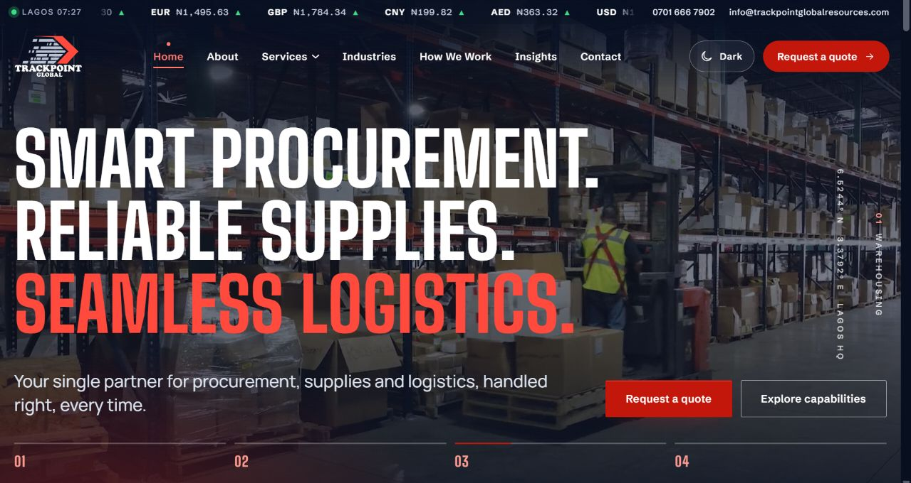
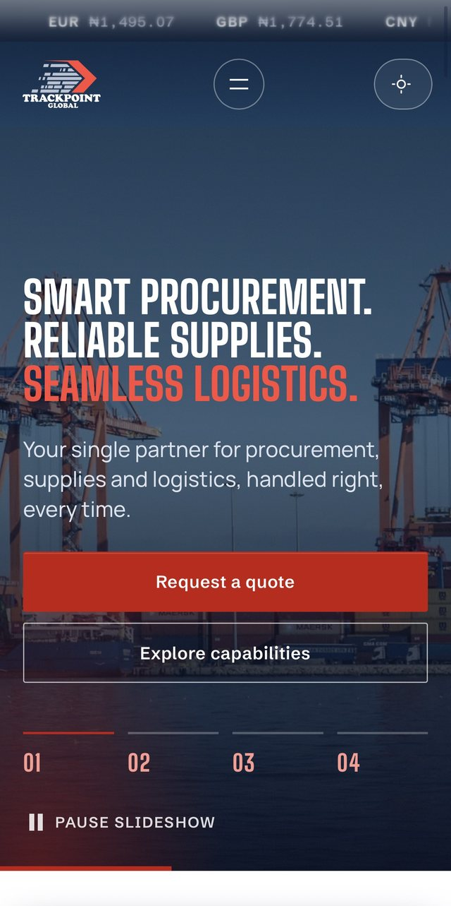
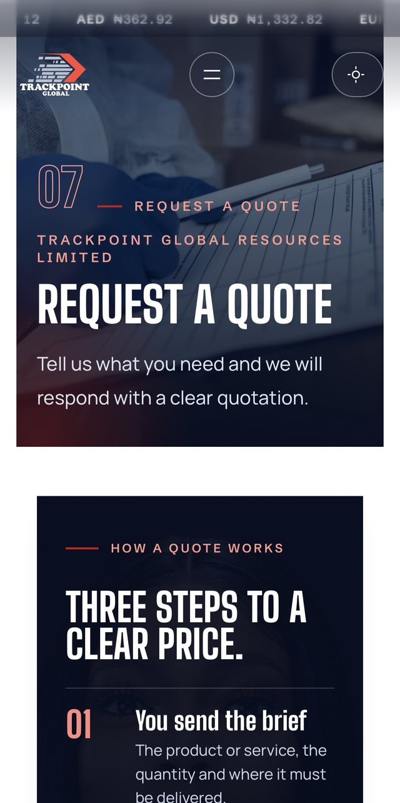

Trackpoint Global Resources
A custom WordPress theme for a procurement, supplies and logistics company in Lagos, and the first WordPress project I have built.
The brief
Trackpoint Global Resources Limited is a Lagos company that does procurement and sourcing, supplies, and logistics. The owner wanted a professional B2B website that explains what the company does, shows the six logistics services as distinct offers, and turns a visitor into a quote request with as little friction as possible.
It is my first WordPress project. I chose to build it as a custom block theme from scratch rather than install a page builder, because I wanted to understand WordPress properly and keep the finished site fast.
Why a custom block theme
Fonts are self hosted (Big Shoulders Display, Schibsted Grotesk and Manrope, all under the Open Font Licence), photos are converted to WebP, and animations pause when a section is off screen.
What the site does
- A request a quote flow that cannot be empty. It uses Fluent Forms when present and falls back to a built in form, so the page is never blank. The form runs in three short steps with quick pick service chips and a progress bar.
- Protection on the form I wrote myself. A hidden honeypot, a two second timing check, a limit of five attempts per ten minutes per address, sanitised and length limited input, and a consent checkbox.
- Nothing is lost if email fails. Every request is also saved privately inside WordPress under “Quote requests”, then emailed to the company with a reply to address.
- A hero slideshow that can be paused. Four slides with a visible pause button and numbered controls, so motion never traps anyone.
- Live exchange rates in naira. A header ticker and a converter, using a free rates API with two backups, cached for an hour. If every source fails it says rates are unavailable and nothing else depends on it.
- World trade lanes. An interactive map of the lanes Trackpoint works, with the local time in each place and a straight path to a quote.
- A map that loads only when seen. No Google request until it is about to appear, none at all until tapped when Data Saver is on, and it never traps scrolling on a phone.
- Four theme modes. Light, dark, match the device, and match the time of day using the device clock only. No location, no tracking.
- Built for phones first. A mega menu on desktop, a sticky Quote and WhatsApp bar on phones, and a pinned scrolling story for the How We Work page.
- Twelve practical articles. Guidance on procurement, freight, customs and delivery, drafted for the client to read and approve, with no prices, delivery times or client names invented.
The size of it
Counted from the theme folder.
Working with a real client
The site went through more than thirty versioned releases, each with its own install note written for a non technical owner: what changed, why, and the exact steps to install and test it on a phone. Client feedback arrived as short, specific requests, such as how a team photo was cropped, the wording of the quote confirmation, and the pre filled WhatsApp message, and each became a release.
The setup scripts matter more than they look. Pages, menus, media and content are created by WP-CLI commands that are safe to run twice, so the whole site can be rebuilt on a fresh install.
Honest about content
Copy the company had not confirmed is marked inside WordPress, in the editor only, so nothing unapproved can slip into launch unnoticed. Facts come from the company’s own profile. Stock photography is credited in the repository and the hero film is stock footage, so the site never presents it as the company’s own premises. The team photos are only used with the client’s permission.
What I learned
Caching hides your fixes. More than once a change was correct and still invisible until the cache was purged, so every install note now ends with the purge step. I also learned to write handling for the failure first: the quote form, the rates ticker and the map all keep working when something they depend on does not.



Need a business site that gets quote requests
A clear path from a visitor to a conversation is the whole job.